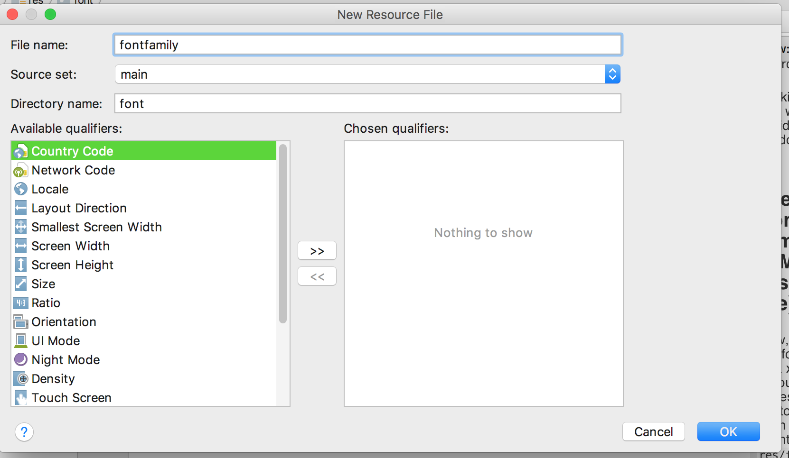

This post is part of the "under 5 minutes series". In this post I'll talk about how did I set up custom fonts to render text in TextView in an Android app.
This post is part of the "under 5 minutes series". In this post I'll talk about how did I set up custom fonts to render text in TextView in an Android app.
Introduction
In this recipe, I'll show you how did I use a custom font to write text "Hello Fonts !" in TextView widget.
Download and setup custom Font
First, decide on the font that you're planning to use. Download it.
I'm referring this sample font as "dot2dot.ttf".
Second, add this custom font in resource directory of android app.
Clicking on font will open it in side window.
Creating Font family (XML resource file)
Now, create the font family or a xml resource file to access this custom font from code.
Right click on res/font folder and create a xml file:

Using the Font Family in TextView
Here's how font resource created in previous step can be accessed from TextView widget:
This post is part of the "under 5 minutes series". In this post I'll talk about how did I set up flavors for an Android app.
Let's start with understanding few key terms. Understanding differences between "Build Types", "Flavor" and "Build Variant" ***Build Types: Build Type refers to build and packaging settings like signing configuration for a project. ***Flavor: A flavor is used to specify custom features, minimum and target API levels, device and API requirements like layout, drawable and custom code (for example, if production code is slightly different than development code). ***Build Variant: The combination of Build Type and Flavor is known as Build Variant. And, now...
This post will show how to request run-time permissions to enable audio recording in a recipe style.
Requesting Audio permission at Runtime This recipe will show how to request run-time permissions to enable audio recording. As you may know already that adding permission in AndroidManifest.xml is not enough on devices running Android 6.0 and greater. This permission has to be requested dynamically at the run-time when user uses your app's recording/mic feature for first time (in addition to declaring this permission in AndroidManifest.xml). Sample App This sample has two buttons: Start/Stop Recording Toggle button : Click...
This post shows how to get started with creating Android apps in Kotlin language using Android Studio 3 and higher.
Creating Kotlin Project in Android Studio (>=3) In Android Studio 3 and higher, there's an option to select to create projects supporting Kolin. It's super simple to start writing your app from scratch in Kotlin. Here are screenshots to demo creating a Navigation Drawer based app in Kotlin: Creating New Project in Android Studio Don't forget to check Kotlin support checkbox. Choosing MainActivity I'm using Navigation Drawer activity as MainActivity for this sample app. Read More
This post shows to integrate a launcher screen in an Android App.
Why Launcher Screen A launch screen is the splash screen that is presented (optionally) to user when an app starts up. The main purpose for this screen is to keep user entertained while data is loading in the background and hence leave a good impression to your first time users. If your app takes some time to show the contents, then user is usually shown a blank screen. A blank screen may discourage users to wait...
This post shows how to integrate sub menu items for FAB (Floating Action Button) in an existing Android app.
Final Outcome Our target to integrate FAB into an existing Android App and creating submenus. Settings icon is used as FAB. Clicking on it will open its submenus: Save, Edit and Photo. Clicking on X will close submenus and Settings icon will re-appear. This is how main screen will look after FAB integrated into it. Clicking on Settings icon will open sub menus: Create Android Studio Project Step#1: Create New Project in Android Studio: Step#2:...
WebViewOverlay Widget is an OpenSourced Android library that provides a drop-in solution for loading a URL in an Overlay WebView in full screen mode.
Motivation I needed a widget that can load a url in WebView in a full-screen closable overlay/modal. I wanted to re-use this new, shiny widget in my other projects as well. So, I decided to upload WebViewOverlay library in a central artifact repository. I chose JCenter because its one of the largest artifact repository for Java and Android libraries and has good integration with Android Studio IDE. If you're interested in learning how did I publish Android libary to JCenter, then...
This article walks through the process of publishing an OpenSourced Android library to JCenter.
Introduction JCenter is a Maven Repository or file server hosted by Bintray for Android libraries. It’s a default repository for Android Studio. To demonstrate the process of publishing an OpenSource Android library, I'm using WebViewOverlay widget library for example. After uploading to JCenter artifact repo, WebViewOverlay widget can be dropped-in to your project like this: compile 'org.ptyagicodecamp:WebViewOverlay:1.0.2' Uploading Android library (in aar format) to Bintray Create log-in at Bintray. Scroll down to register for an open-source project. Create a new...
This post shows how build.gradle can be configured to sign Android APKs automatically without manual interventions.
Declaring Signing credentials Never put your signing apk credentials in github or any public sharable place. Always put them in a non-committable file. I'll be using local gradle installations's gradle.properties to store signing creds. It sits at root level of your project. Alternately, you can also use /.gradle/.gradle.properties. Declaring release apk credentials RELEASE_KEYSTORE_FILE={path to your release keystore} RELEASE_KEYSTORE_PASSWORD=***** RELEASE_KEYSTORE_ALIAS=***** Declaring debug apk credentials DEBUG_KEYSTORE_FILE={path to your debug keystore} DEBUG_KEYSTORE_PASSWORD=***** DEBUG_KEYSTORE_ALIAS=***** Note: There is no quotes around file path, passwords and alias. Loading variables from...
This post is about Opensource WebViewHelper library at Github
A little about WebView widgets: Webview widget is used to display HTML contents in an Android app. HTML contents can be rendered in a TextView widget using Html.fromHtml() method to parse very basic text. So why do we need WebView widget ? WebView widget is capable of handling more advanced HTML tags, Javascript and CSS, which gives a native feel to HTML contents right in your app. But this doesn't come for free. WebViews are more...
This post is about my experience setting up githup pages using Pelican from scratch assuming no prior experience in Python webframeworks.
Setting up environment: First we need a pacakge manager to install necessery tools and packages. I chose Homebrew. Install Homebrew package manager and other needed tools for Mac by pasting this command in terminal: /usr/bin/ruby -e "$(curl -fsSL https://raw.githubusercontent.com/Homebrew/install/master/install)" brew install wget Now, use Homebrew to install python, pip and other related tools. As time of this writing, it will install Python 2.7.12. brew install python Setup vitutalenv tool to keep python installations separate in their own sandbox:...